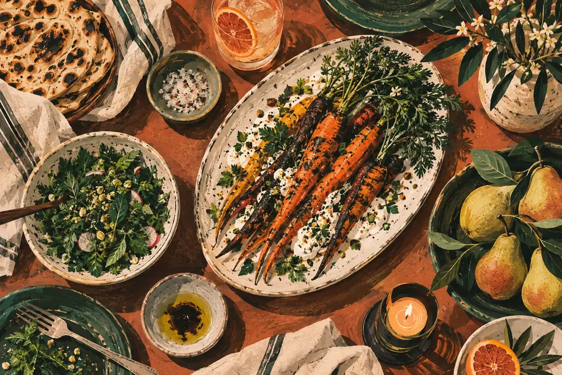

An imagined neighbourhood gathering place
A little space.
A shared table.
For the everyday pleasure
of eating together.

AI-generated concept illustration.
Before you visit
The practical things.
- Hours
- Not set for this concept.
No opening hours are represented. - Phone / call
- No phone number is connected.
This sample does not place a call. - Address / directions
- No physical location.
No map or directions are connected.
Room for your people
Bring a few
familiar faces.
An imagined place for catching up, passing plates, and making an ordinary day feel good.
Group & catering request — sample ↗A preview, not a service
An invitation to imagine.
Table, group and catering requests are sample pathways only. No live ordering, reservations or catering are offered here. Nothing can be submitted, purchased or confirmed.
Explore the menu and the mood. This table exists only on the page.
Return to the sample menu ↑